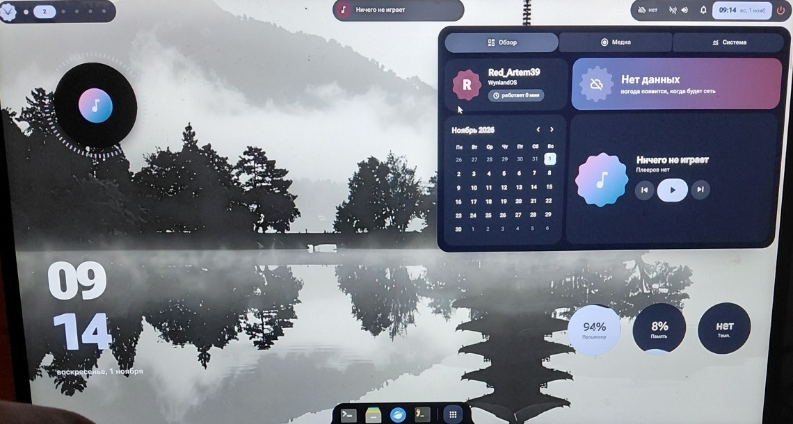
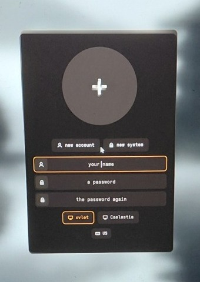
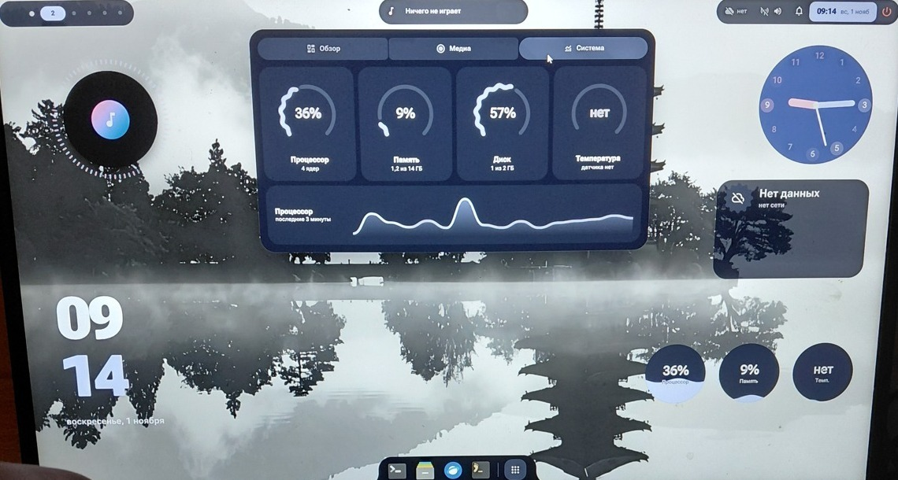
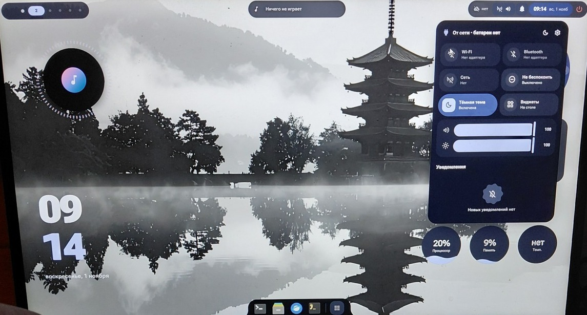

<meta charset="utf-8">
<title>WynlandOS</title>
<meta name="claude:viewport-fit-sides" content="cover">
<meta name="description" content="WynlandOS: x86_64 operating system with its own kernel that runs Linux programs. · Операционная система x86_64 со своим ядром, которая запускает программы Linux.">
<link rel="stylesheet" href="styles.css">
<link rel="preconnect" href="https://fonts.googleapis.com">
<link rel="stylesheet" href="https://fonts.googleapis.com/css2?family=Inter+Tight:wght@500;600;650&family=Inter:wght@400;500;600&family=JetBrains+Mono:wght@500;600&display=swap">

<header class="top">
  <div class="wrap">
    <a class="brand" href="index.html">WynlandOS</a>
    <nav class="nav" aria-label="Pages">
      <a href="index.html" aria-current="page"><span data-l="ru">Главная</span><span data-l="en">Overview</span></a>
      <a href="features.html"><span data-l="ru">Возможности</span><span data-l="en">Features</span></a>
      <a href="hardware.html"><span data-l="ru">Железо и сборка</span><span data-l="en">Hardware and build</span></a>
    </nav>
    <div class="lang" role="group" aria-label="Language">
      <button type="button" data-setlang="ru" aria-pressed="true">RU</button>
      <button type="button" data-setlang="en" aria-pressed="false">EN</button>
    </div>
  </div>
</header>

<main>
  <div class="band">
    <div class="wrap hero">
      <div>
        <span class="kicker"><span data-l="ru">x86_64 · написана с нуля</span><span data-l="en">x86_64 · written from scratch</span></span>
        <h1><span data-l="ru">Операционная система с собственным ядром. Программы Linux запускаются без изменений.</span><span data-l="en">An operating system with its own kernel. Linux programs run on it unmodified.</span></h1>
        <p class="lead"><span data-l="ru">Свой загрузчик UEFI, своё ядро Canopy, свой init и свой GPU-рабочий стол. Программы из Ubuntu и Debian запускаются без изменений, вместе с glibc.</span><span data-l="en">Its own UEFI bootloader, Canopy kernel, init and GPU desktop. Programs from Ubuntu and Debian run unmodified, glibc and all.</span></p>
        <div class="btns">
          <a class="btn solid" href="https://github.com/RedArtem39/WynlandOS"><span data-l="ru">Исходники на GitHub</span><span data-l="en">Source on GitHub</span></a>
          <a class="btn" href="hardware.html"><span data-l="ru">Железо и сборка</span><span data-l="en">Hardware and build</span></a>
        </div>
      </div>
      <figure>
        
        <figcaption><span data-l="ru">Оболочка xvlet на ASUS VivoBook 15 (фото с телефона)</span><span data-l="en">The xvlet shell on an ASUS VivoBook 15 (phone photo)</span></figcaption>
      </figure>
    </div>
  </div>

  <div class="wrap">
    <section class="s">
      <h2><span data-l="ru">Ядро Canopy, а не Linux</span><span data-l="en">The Canopy kernel, not Linux</span></h2>
      <p class="lede"><span data-l="ru">Ядро Canopy написано с нуля и понимает системные вызовы Linux x86_64, поэтому готовые программы из Ubuntu и Debian работают без пересборки. Автотесты запускают систему в QEMU, виртуальной машине, и проверяют программы. Загружается и на ноутбуке ASUS с USB-флешки.</span><span data-l="en">The Canopy kernel is written from scratch and understands the Linux x86_64 system calls, so prebuilt programs from Ubuntu and Debian run without rebuilding. Automatic tests run the system in QEMU, a virtual machine, and check the programs. It also boots on an ASUS laptop from a USB stick.</span></p>
      <div class="tiles">
        <div><h3>Canopy</h3><p><span data-l="ru">Ядро: SMP, планировщик EEVDF, адресные пространства процессов.</span><span data-l="en">Kernel: SMP, EEVDF scheduler, per-process address spaces.</span></p></div>
        <div><h3>Zerp 2.0</h3><p><span data-l="ru">Тайловый композитор Wayland на Qt Quick. Как Hyprland, рисует только окна.</span><span data-l="en">Tiling Wayland compositor in Qt Quick. Like Hyprland, it draws only windows.</span></p></div>
        <div><h3><span data-l="ru">Оболочки</span><span data-l="en">Shells</span></h3><p><span data-l="ru">xvlet (Material 3 Expressive) и Caelestia, Linux-оболочка, портированная на WynlandOS.</span><span data-l="en">xvlet (Material 3 Expressive) and Caelestia, a Linux shell ported to WynlandOS.</span></p></div>
        <div><h3>leaf</h3><p><span data-l="ru">Ставит пакеты из архива Ubuntu и проверяет подписи и контрольные суммы: leaf install htop</span><span data-l="en">Installs packages from Ubuntu's archive and checks signatures and checksums: leaf install htop</span></p></div>
      </div>
    </section>

    <section class="s">
      <h2><span data-l="ru">Ноутбук ASUS VivoBook 15</span><span data-l="en">ASUS VivoBook 15</span></h2>
      <p class="lede"><span data-l="ru">Снимки с ноутбука Intel i3-1115G4. Интернет пока работает только через USB-модем телефона.</span><span data-l="en">Photos from an Intel i3-1115G4 laptop. For now the internet works only through a phone's USB modem.</span></p>
      <div class="shots">
        <figure><figcaption><span data-l="ru">Вход: первый аккаунт создаётся при загрузке</span><span data-l="en">Login: the first account is created on boot</span></figcaption></figure>
        <figure><figcaption><span data-l="ru">Системный монитор</span><span data-l="en">System monitor</span></figcaption></figure>
        <figure><figcaption><span data-l="ru">Быстрые настройки и уведомления</span><span data-l="en">Quick settings and notifications</span></figcaption></figure>
      </div>
    </section>
  </div>
</main>

<footer>
  <div class="wrap">
    <span><span data-l="ru">WynlandOS · GPL-2.0-or-later · © 2026 Red_Artem39</span><span data-l="en">WynlandOS · GPL-2.0-or-later · © 2026 Red_Artem39</span></span>
    <a href="https://github.com/RedArtem39/WynlandOS">github.com/RedArtem39/WynlandOS</a>
  </div>
</footer>

<script>
(function () {
  var root = document.documentElement;
  var saved = null;
  try { saved = localStorage.getItem('wynland-lang'); } catch (e) {}
  var start = saved || ((navigator.language || '').slice(0, 2) === 'en' ? 'en' : 'ru');
  function setLang(l) {
    root.setAttribute('data-lang', l);
    root.lang = l;
    document.querySelectorAll('[data-setlang]').forEach(function (b) {
      b.setAttribute('aria-pressed', String(b.getAttribute('data-setlang') === l));
    });
    try { localStorage.setItem('wynland-lang', l); } catch (e) {}
  }
  document.querySelectorAll('[data-setlang]').forEach(function (b) {
    b.addEventListener('click', function () { setLang(b.getAttribute('data-setlang')); });
  });
  setLang(start);
})();
</script>
